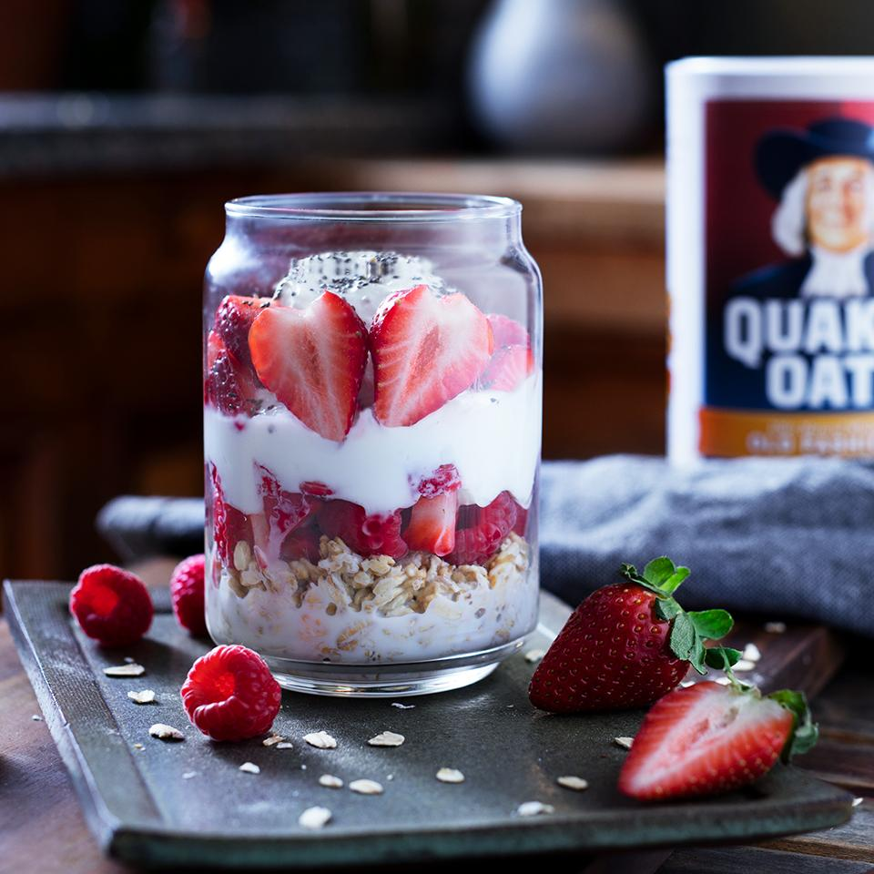

Overnight oats

Description
Prep these fruity, creamy oats the night before and in the morning you've got a quick, fresh breakfast.
Ingredients
- ½ cup Quaker® Oats (Quick or Old Fashioned, uncooked)
- ½ cup non-fat milk
- ½ cup non-fat plain Greek yogurt
- 1 teaspoon chia seeds (Optional)
- 1 cup fresh mixed berries and fruit
Steps
- Add Quaker® Oats to your container of choice and pour in milk.
- Layer Greek yogurt, chia seeds and mixed fruit and berries.
- Refrigerate overnight and enjoy in the morning!
Back to homepage